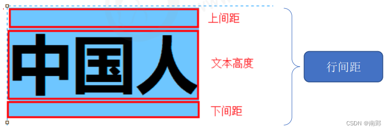

一、CSS 属性
1. CSS 字体属性
CSS fonts (字体)属性用于定义字体系列、大小、粗细、和文字样式（如斜体）。
1.1 字体系列
CSS 使用 font-family 属性定义文本字体系列。
body {
font-family: "Microsoft YaHei", Arial, Helvetica, sans-serif;
}注意：
- 尽量使用默认字体，保证不同浏览器的兼容性。（谷歌浏览器默认字体为微软雅黑）
- 最常见的几个字体：
body {font-family: 'Microsoft YaHei',tahoma,arial,'Hiragino Sans GB'; } - 支持同时定义多个字体，从左至右优先级，以防因电脑未装字体而无法正常显示。
1.2 字体大小
CSS 使用 font-size 属性定义字体大小。
body {
font-size: 16px;
}- 谷歌浏览器默认是
16px - 不同浏览器可能默认显示的字号大小不一致，我们尽量给一个明确值大小，不要默认大小
- 可以给
body指定整个页面文字大小
1.3 字体粗细
CSS 使用 font-weight 属性设置字体粗细
p {
font-weight: 700;
}| 属性值 | 描述 |
|---|---|
| normal | 默认值（不加粗） |
| bold | 定义粗体（加粗） |
| 100-900 | 400 等价于 normal，700 等价于 bold，无单位 |
1.4 文字样式
CSS 使用 font-style 属性设置文本风格。
p { font-style: italic; }| 属性值 | 描述 |
|---|---|
| normal | 正常显示 |
| italic | 斜体 |
注意：
平常很少给字体加斜体，而是给斜体标签（em,i）改为不倾斜字体。
1.5 字体复合属性写法
将各种字体属性写在同一选择器下，节约代码。
规则：严格遵守顺序，且 font-size 和 font-family 必须有。
body {
font: font-style font-weight font-size/line-hight font-family;
}1.6 字体属性总结
| 字体属性 | 表示 | 注意 |
|---|---|---|
| font-family | 字体 | 按照团队约定来写 |
| font-size | 字号 | 单位是px |
| font-weight | 字体粗细 | 400=normal,700=bold |
| font-style | 字体样式 | italic，normal，常用 normal |
| font | 属性连写 | 顺序不能变，字体和字号属性必须有 |
2. CSS 文本属性
CSS text(文本)属性定义文本外观，比如颜色、对齐、装饰、缩进、行间距等。
2.1 文本颜色
color 属性定义文本颜色。
div {
color: red;
}| 表示颜色 | 属性值 |
|---|---|
| 预定义的颜色值 | red,green,pink |
| 十六进制（常用) | #FF0000，#FF6600 |
| RGB 代码 | rgb(255,0,0) |
2.2 装饰文本
text-decoration 属性规定添加到文本的修饰。可以给文本添加下划线、删除线、上划线等。
text-decoration: underline;| 属性值 | 描述 |
|---|---|
| none | 默认，无装饰（最常用） |
| underline | 下划线，a 标签自带（常用） |
| overline | 上划线。（几乎不用） |
| line-through | 删除线。（不常用） |
2.3 对齐文本
text-align 属性用于设置元素文本内容的对齐方式。
div {
text-align: center;
}| 属性值 | 解释 |
|---|---|
| left | 左对齐（默认） |
| right | 右对齐 |
| center | 居中对齐 |
2.4 文本缩进
text-indent定义段落首行缩进。
p {
text-indet: 5px;
}em 是一个相对单位，1em 就是一个字符所占大小。当 text-indent=2em，则恰好缩进两个文字。
2.5 行高
line-height 设置行间的距离，行间距=文本高度+上间距+下间距
p {
line-height: 26px;
}
2.5.1 单行文字垂直居中的小技巧
CSS 没有给我们提供文字垂直居中的代码. 这里我们可以使用一个小技巧来实现。
解决方案：让文字的行高等于盒子的高度。
原理分析：行高=文字本身高度+上空隙+下空隙=盒子高度
当行高小于盒子高度，则文字偏上；当行高大于盒子高度，文字偏下。
2.6 文本属性总结
| 属性 | 表示 | 注意 |
|---|---|---|
| color | 文本颜色 | 通常十六进制缩写 |
| text-decoration | 文本装饰 | 添加下划线underline，取消下划线none |
| text-align | 文本对齐 | 可以设定文字水平的对齐方式 |
| text-indent | 文本缩进 | 通常用于段落首行缩进2个字的距离，记住 text-indent: 2em; |
| line-height | 行高 | 控制行与行之间的距离 |
3. CSS背景属性
CSS 背景属性可以给元素添加背景样式。
背景属性可以设置背景颜色、背景图片、背景平铺、背景图片位置、背景图像固定等。
3.1 背景颜色
background-color 定义了元素的背景颜色。
background-color: 颜色值;一般而言，颜色默认值是 transparent（透明），我们也可以指定背景颜色为透明色或其他色。
3.1.1 背景色半透明
CSS3 提供 background: rgba(r,g,b,a) 属性设置图片透明度。
background-color: rgba(0, 0, 0, .3);注意：
- 背景半透明是指盒子背景半透明，盒子里面的内容不受影响。
3.2 背景图片
background-image 属性描述了元素的背景图像，实际开发用于 logo 或者一些装饰性开发的小图片或者是超大的背景图片，优点是便于控制位置。（也用于精灵图）
background-image: none（默认无背景图）| url(图片url) （使用绝对或相对地址指定图片）;3.3 背景平铺
若需要在 HTML 页面上对背景图进行平铺，可以使用 background-repeat 属性。
background-repeat: repeat(默认) | no-repeat | repeat-x | repeat-y;| 参数值 | 作用 |
|---|---|
| repeat | 背景图像在纵向和横向上平铺（默认） |
| no-repeat | 背景图像不平铺 |
| repeat-x | 背景图像在横向上平铺 |
| repeat-y | 背景图像在纵向上平铺 |
3.4 背景图像固定
background-attachment 属性设置背景图像是否随着页面其余部分滚动。
background-attachment 后期可以制作视差滚动效果。
background-attachment: scroll | fixed;| 参数 | 作用 |
|---|---|
| scroll | 背景图像随着对象内容滚动 |
| fixed | 背景图像固定 |
3.5 背景图片位置
background-position 可以改变图片在背景中的位置。
background-position: x y;参数代表的意思是：x 坐标和 y 坐标。 可以使用 方位名词 或者 精确单位
| 参数值 | 说明 |
|---|---|
| length | 百分数 / 由浮点数字和单位字符组成的长度值 |
| position | top / center / bottom / left / center / right 方位名词 |
1.参数是方位名词
- 若两个值都是方位名词，则两个值前后顺序无关，比如
left top和top left效果一致。 - 若只指定了一个方位名词，另一个值省略，则第二个值默认居中对齐。
2.参数是精确单位
- 第一个必定是 x 坐标，第二个是 y 坐标
- 若只指定一个数值，那该值一定是x坐标，另一个默认垂直居中
3.参数是混合单位
- 若是混合单位，则第一个值是 x 坐标，第二个值是 y 坐标。
3.6 背景属性复合写法
简化代码，将属性写在同一个属性 background 下。
当使用简写属性时，没有特定的书写顺序，一般习惯约定顺序为：
background：背景颜色 背景图片地址 背景平铺 背景图像滚动 背景图片位置
background: transparent url(image.jpg) repeat-y fixed top;3.7 背景属性总结
| 属性 | 作用 | 值 |
|---|---|---|
| background-color | 背景颜色 | 颜色值/十六进制/RGB代码 |
| background-image | 背景图片 | url(图片路径) |
| background-repeat | 背景平铺 | repeat(默认)/no-repeat/repeat-x/repeat-y |
| background-attachment | 背景固定 | scroll/fixed |
| background-position | 背景位置 | x,y坐标 |
| 背景复合写法 | 简化书写 | 背景颜色 背景图片地址 背景平铺 背景图像滚动 背景图片位置 |
二、元素显示模式
元素显示模式就是元素（标签）以什么方式进行显示，比如<div>自己占一行，比如一行可以放多个span。
1. 块元素
常见的块元素有 h1-h6、p、div、ul、ol、li等，典型块元素是 div。
块级元素的特点：
- 独占一行。
- 高度、宽度、外边距以及内边距都可以控制。
- 宽度默认是容器（父级宽度）的 100%。
- 是一个容器及盒子，里面可以放行内或块级元素。
注意：
- 文字类的标签（主要用于存放文字）内不能放块级元素。
- 文字类标签有
p，h1-h6，里面不能放块级元素，特别不能放div元素。
2. 行内元素
常见行内元素：a、strong、b、em、i、del、s、ins、u、span，典型行内元素是 span，行内元素也叫内联元素。
行内元素的特点：
- 相邻行内元素在一行上，之间存在空白缝隙，一行可以显示多个。
- 高、宽直接设置是无效的。
- 默认宽度就是它本身内容宽度。
- 行内元素只能容纳文本或其他行内元素。
注意
a链接里面不能放链接- 特殊情况链接
a里面可以放块级元素，但是给a转换一下块级模式最安全。
3. 行内块元素
在行内元素中有几个特殊标签——img, input、td，它们同时具有块元素和行内元素的特点。有些资料称为行内块元素。
特点：
- 和相邻行内元素（行内块）在一行上，之间存在空白缝隙，一行可以显示多个（行内元素特点）。
- 默认宽度是本身内容宽度（行内元素特点）。
- 高度、行高、外边距、内边距都可以控制（块级元素特点）。
4. 元素显示模式转换
特殊情况下，需要将一个元素的模式转换为另外一种模式，使其具有另外一种模式的特性。
比如想要增加链接 a 的触发范围。
- 行内->块级
a {
display: block;
}- 块级->行内
div {
display: inline;
}- 行内/块级-> 行内块元素
span {
display: inline-block;
}5. 元素显示模式总结
| 元素模式 | 元素排列 | 设置样式 | 默认宽度 | 包含 |
|---|---|---|---|---|
| 块级元素 | 一行只能放一个块级元素 | 可以设置高度宽度 | 容器的 100% | 可以包含任何标签 |
| 行内元素 | 一行可以放多个行内元素 | 不可以设置宽度高度 | 本身内容宽度 | 容纳文本或者其他行内元素 |
| 行内块元素 | 一行可以放置多个行内块元素 | 可以设置高度宽度 | 本身内容宽度 |
三、CSS 引用方式
按照 CSS 书写的位置不同，CSS 样式表可以分为三大类：
- 行内样式表（行内式）
- 内部样式表（嵌入式）
- 外部样式表（链接式）
1. 行内样式表
行内样式表（内联样式表）是在元素标签内部的 style 属性中设定 CSS 样式，适合修改简单样式。
<div style="color: red; font-size: 12px">行内样式表</div>2. 内部样式表
将 CSS 代码写在 HTML 页面内部，单独放在一个 <style> 标签中。
<style>理论上可以放在 HTML 文档中任何一个地方，一般放在<head>标签中。- 方便控制整个页面中的元素样式。
练习时使用，实际开发不用。
3. 外部样式表
实际开发中都是外部样式表，适用于样式比较多的情况。
核心：样式单独写到 CSS 文件中，再将 CSS 文件引入到 HTML 页面中。
引入外部样式表分为两步：
- 新建一个后缀名为 .css 的样式文件，把所有 CSS 代码都放入此文件中。
- 在 HTML 页面中，使用 标签引入这个文件。
<link rel="stylesheet" href="css文件路径" />
- rel：定义当前文档与被链接文档之间的关系，在这里需要指定为”stylesheet”，表示被链接的文档是一个样式表文件。
- href：定义所链接外部样式表文件的URL，可以是相对路径，也可以是绝对路径。
四、CSS三大特性
1. 层叠性
相同选择器设置相同的样式，此时一个样式就会覆盖另一个冲突的样式。层叠性主要解决样式冲突的问题。
层叠性原则：
- 样式冲突：遵循的原则是就近原则，哪个样式离结构近，就执行哪个样式
- 样式不冲突，不会层叠
2. 继承性
CSS 中子标签会继承父标签的某些样式，如文本颜色和字号。
- 恰当使用继承可以简化代码，降低 CSS 的复杂性
- 子元素可以继承父元素的样式（text-, font-, line-这些元素开头的可以继承，以及 color 属性）
- 不继承width、height、内外边距
2.1 行高的继承性
body {
font: 12px/1.5 Microsoft Yahei;
}- 行高可以跟单位也可以不跟
- 如果子元素没有设置行高，则会继承父元素的行高为 1.5
- 此时子元素的行高是：当前子元素的文字大小
*1.5 - body 行高 1.5 这样写法最大优势就是里面的子元素可以根据文字大小自动调整行高
3. 优先级
当一个元素指定多个选择器时，就会有有优先级的产生。
- 选择器相同，则执行层叠性
- 选择器不同，则根据选择器权重执行
选择器权重：
important>style=””>id>伪类>class>元素>*>浏览器>继承
| 选择器 | 选择器权重 |
|---|---|
继承或者* |
0,0,0,0 |
| 元素选择器 | 0,0,0,1 |
| 类选择器，伪类选择器 | 0,0,1,0 |
| id 选择器 | 0,1,0,0 |
行内样式 style="" |
1,0,0,0 |
!important |
∞ 无穷大 |
!important写法： |
p {
color: pink !important;
}- 权重是有4组数字组成，但是不会有进位。可以理解为类选择器永远大于元素选择器，以此类推..
- 继承的权重为 0，如果该元素没有直接选中，不管父元素权重多高，子元素得到的权重都是 0。
a链接，浏览器默认指定了一个样式（蓝色，下划线），不会继承父级样式。
复合选择器权重的叠加
权重可以叠加，需要计算权重，但是没有进位。
- div ul li ——> 0,0,0,3
- .nav ul li ——> 0,0,1,2
- a:hover —–—> 0,0,1,1
- .nav a ——> 0,0,1,1